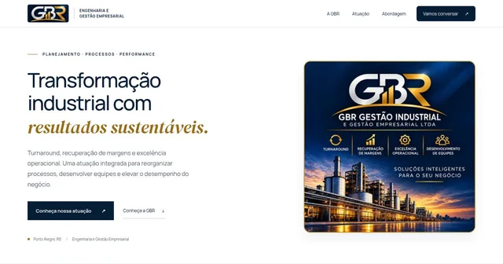

GBR EngenhariaInstitucional · Cartão digitalVisitar siteGBR Engenharia
Site para clienteCriação do site institucional e cartão digital para apresentar a empresa e facilitar o contato.
Conhecer o siteSITES & MARKETING DIGITAL
Eu crio sites e cuido da presença digital de empresas e profissionais. Do primeiro projeto à evolução de cada página.
Johne Rodrigues
Conversa direta com quem faz acontecer.
Um espaço digital com a sua identidade.
Conheça nossa história01 — PORTFÓLIO
Conheça o trabalho desenvolvido para a GBR Engenharia: uma presença digital para apresentar a empresa e facilitar novos contatos.

GBR EngenhariaInstitucional · Cartão digitalVisitar siteCriação do site institucional e cartão digital para apresentar a empresa e facilitar o contato.
Conhecer o site02 — COMO POSSO AJUDAR
Você pode começar com um projeto pontual e continuar com acompanhamento. A proposta acompanha o momento do seu negócio.
Sites institucionais e páginas de campanha com navegação clara, versão mobile e chamadas para ação.
Estrutura técnica, organização de páginas e conteúdo voltado às dúvidas e buscas do seu público.
Planejamento, configuração e gestão de campanhas no Google Ads e Meta Ads. Investimento em mídia separado da gestão.
Atualizações, ajustes, publicação de conteúdo e acompanhamento técnico dentro de um escopo mensal combinado.
Uma página com seus contatos e links, pronta para compartilhar pelo celular ou por um QR Code.
Tecnologia, criação e estratégia.
03 — PRAZER, JOHNE
Mais de 10 anos de experiência em tecnologia, agora também aplicados à criação e à gestão de projetos digitais.
Minha trajetória passa por infraestrutura de TI, suporte e sistemas. Nos meus projetos digitais, conecto essa base técnica ao desenvolvimento de sites, conteúdo, SEO e campanhas.
Você fala diretamente comigo, entende o que está sendo feito e recebe uma proposta com entregas definidas para o seu negócio.
04 — SEM COMPLICAR
Entendo seu negócio, seu público e o que você precisa resolver.
Definimos entregas, investimento, materiais e prazo de trabalho.
Criação, revisão e ajustes com a sua participação nas aprovações.
Publicação e orientações. Se fizer sentido, seguimos com a gestão mensal.
ANTES DE COMEÇAR
Depende do número de páginas, dos conteúdos e das funcionalidades. Depois de entender sua necessidade, envio uma proposta com o que está incluído e as condições de pagamento.
Sim. Primeiro avalio a estrutura e os acessos disponíveis para definir quais ajustes, atualizações ou melhorias posso executar.
Sim. Os projetos são desenvolvidos para se adaptar a celulares, tablets e computadores, com atenção à leitura e à navegação.
Não há garantia de posições ou vendas. O trabalho envolve planejamento, implementação e acompanhamento. Os resultados também dependem da concorrência, da oferta, do orçamento e do atendimento do seu negócio.
Esses custos são discriminados na proposta. A verba paga ao Google ou à Meta é separada do serviço de gestão de campanhas.
VAMOS CONVERSAR?
Conte o que você tem em mente. Vamos entender juntos qual é o melhor primeiro passo para o seu negócio.
WhatsApp: (41) 98819-1362Aponte a câmera para abrir o cartão digital.